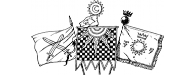
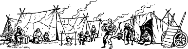

1
Lone Wolf’s announcement that the Kai must prepare for a crusade in the Stornlands galvanizes the monastery into a frenzy of activity. Eagerly the members of the New Order set about their duties, and the preparations for the march to Quarlen are completed within two days as planned. On the morning of the third day, the Kai assemble in the training park in full battle-dress. A deathly hush descends upon the gathering as every Kai Lord, from lowly initiate to Grand Master, listens with trepidation as Lone Wolf reads aloud a list of names. One in five of all those present must stay to defend the monastery, and Lone Wolf’s list contains the names of the one hundred Kai he has chosen to remain behind. As each of these warriors is called, so they leave the assembled ranks to take up guard positions on the battlements and towers. Graciously they accept their lot, though none are glad to have been chosen.
The march begins shortly before noon. Lone Wolf rides at the head of the column, in the company of nine who comprise yourself, your four fellow Grand Masters, Gwynian the Sage, and a trio of Kai Mentoras who proudly hold aloft the battle-banners of the Kai, the Royal Arms of Sommerlund, and (in Gwynian’s honour) a scarlet standard bearing the crossed swords of Varetta. The long ride south offers many Sommlending a rare opportunity to see the Kai travelling together in battle-order. Word of your coming spreads quickly through towns and villages that lie on your route, and hundreds turn out to wave and cheer as you pass.
{kind=link}

Favoured by cool dry weather, the column makes swift progress as it crosses the Southlund Marches and enters the remote province of Ruanon. Within a week you have reached Casiorn, the City of Merchants, where fresh provisions and a comfortable billet are provided by High-Mayor Kordas. Lone Wolf learns from Kordas that Vandyan’s armies have now seized control of Lyris and are grouping along the River Quarl in preparation to push east towards Casiorn itself. Kordas’ mercenaries are holding a defensive line along the river’s east bank, having destroyed all the bridges at Quarlen to hinder the enemy’s advance. Their commander, Lord Nathuro of Anari, is keenly awaiting the arrival of the Kai. Less encouraging is the news from Varetta. The city has endured a cruel and relentless bombardment from Vandyan’s hordes and has suffered many casualties, yet its ancient walls still stand and stoically its citizens are keeping the besieging enemy at bay. The news that Varetta has not fallen raises Gwynian’s spirits, but few, including the sage himself, expect the city to survive unaided for much longer.
The column departs from Casiorn early the following day and rides due west towards Quarlen. For four days you follow the highway towards your destination and, with each passing day, so the number of refugees that you encounter steadily increases. Most are Lyrisian, but there are also Deldenian and Salonese among their numbers. Forced out of their homes by the war, they have salvaged what few possessions they can carry and have crossed the River Quarl. Now they are settled in tented encampments all along the fertile valley which separates the Slovarian and Quarlen mountains.
{kind=link}

‘Regard these people well,’ commands Lone Wolf, as the column rides past their makeshift settlements, ‘and remember that their survival, and the survival of thousands like them, depends upon the swift success of our crusade.’